2023 National 5 Chemistry - Paper 1 questions
Source: Scottish Qualifications Authority (SQA) / Qualifications Scotland. This is a StemInteract HTML companion, not an official HTML edition. Selectable text is supplied alongside original page images. Use the images or original PDF for equations, powers, fractions, vector notation, tables and diagrams; text extraction cannot fully preserve mathematical layout.
Jump to a question
PDF page 1
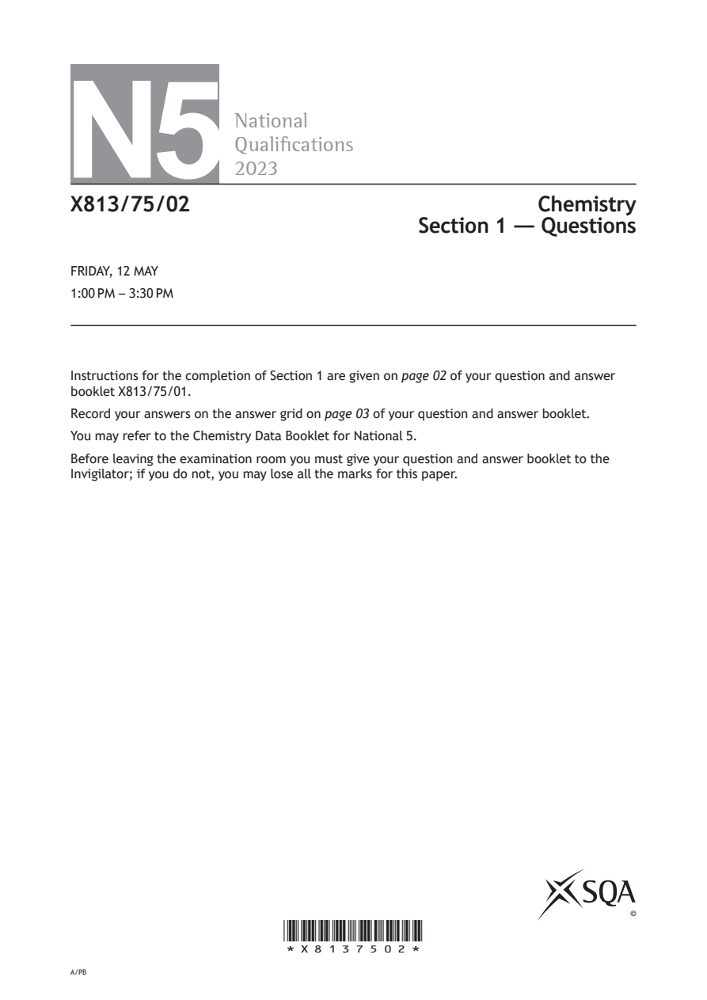
Selectable page text
N5
National
Qualications
2023
X813/75/02 Chemistry
Section 1 — Questions
FRIDAY, 12 MAY
1:00 PM – 3:30 PM
Instructions for the completion of Section 1 are given on page 02 of your question and answer
booklet X813/75/01.
Record your answers on the answer grid on page 03 of your question and answer booklet.
You may refer to the Chemistry Data Booklet for National 5.
Before leaving the examination room you must give your question and answer booklet to the
Invigilator; if you do not, you may lose all the marks for this paper.
©
*X8137502*
A/PBPDF page 2
Paper 1, Question 1Paper 1, Question 2Paper 1, Question 3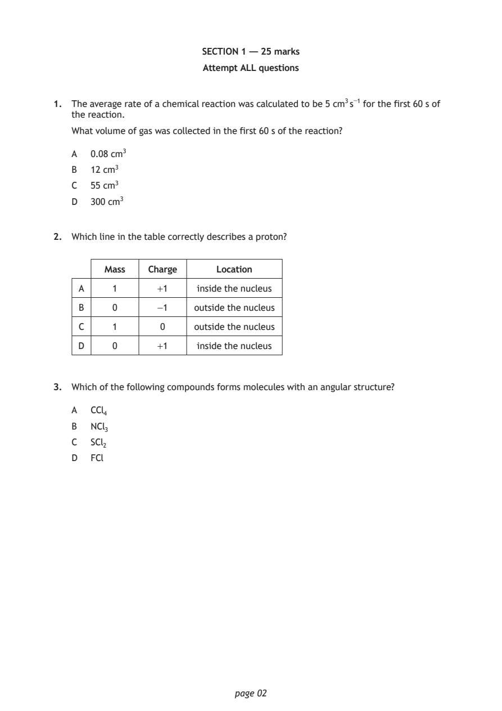
Selectable page text
SECTION 1 — 25 marks
Attempt ALL questions
1. The average rate of a chemical reaction was calculated to be 5 cm³ s⁻¹ for the first 60 s of
the reaction.
What volume of gas was collected in the first 60 s of the reaction?
A 0.08 cm³
B 12 cm³
C 55 cm³
D 300 cm³
2. Which line in the table correctly describes a proton?
Mass Charge Location
A 1 +1 inside the nucleus
B 0 -1 outside the nucleus
C 1 0 outside the nucleus
D 0 +1 inside the nucleus
3. Which of the following compounds forms molecules with an angular structure?
A CCl₄
B NCl₃
C SCl₂
D FCl
page 02PDF page 3
Paper 1, Question 4Paper 1, Question 5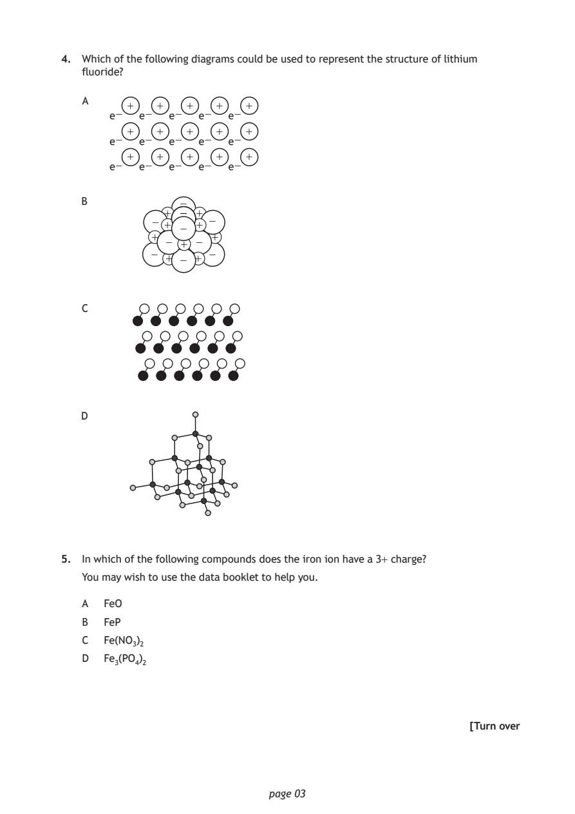
Selectable page text
4. Which of the following diagrams could be used to represent the structure of lithium
fluoride?
+ + + + +
e− e− e− e− e−
+ + + + +
e− e− e− e− e−
+ + + + +
e− e− e− e− e−
page 03
+
−
+ + −−
+
+
−
+
+
+
−
− +
A
B
− −
−
− −
−
C
D
5. In which of the following compounds does the iron ion have a 3+ charge?
You may wish to use the data booklet to help you.
A FeO
B FeP
C Fe(NO₃)₂
D Fe₃(PO₄)₂
[Turn overPDF page 4
Paper 1, Question 6Paper 1, Question 7Paper 1, Question 8Paper 1, Question 9Paper 1, Question 10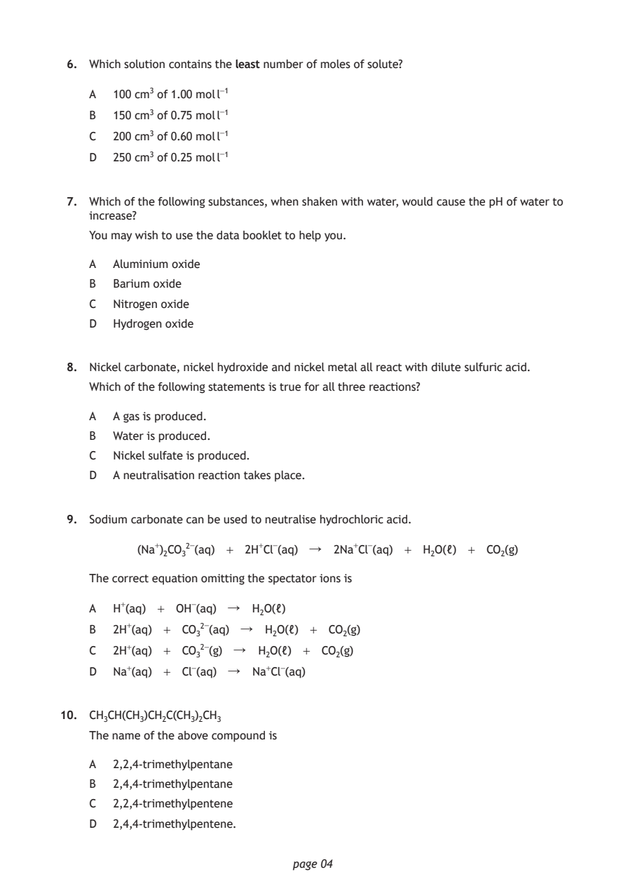
Selectable page text
6. Which solution contains the least number of moles of solute?
A 100 cm³ of 1.00 mol l⁻¹
B 150 cm³ of 0.75 mol l⁻¹
C 200 cm³ of 0.60 mol l⁻¹
D 250 cm³ of 0.25 mol l⁻¹
7. Which of the following substances, when shaken with water, would cause the pH of water to
increase?
You may wish to use the data booklet to help you.
A Aluminium oxide
B Barium oxide
C Nitrogen oxide
D Hydrogen oxide
8. Nickel carbonate, nickel hydroxide and nickel metal all react with dilute sulfuric acid.
Which of the following statements is true for all three reactions?
A A gas is produced.
B Water is produced.
C Nickel sulfate is produced.
D A neutralisation reaction takes place.
9. Sodium carbonate can be used to neutralise hydrochloric acid.
(Na⁺)₂CO₃²⁻(aq) + 2H⁺Cl⁻(aq) ↓ 2Na⁺Cl⁻(aq) + H₂O(ℓ) + CO₂(g)
The correct equation omitting the spectator ions is
A H⁺(aq) + OH⁻(aq) ↓ H₂O(ℓ)
B 2H⁺(aq) + CO₃²⁻(aq) ↓ H₂O(ℓ) + CO₂(g)
C 2H⁺(aq) + CO₃²⁻(g) ↓ H₂O(ℓ) + CO₂(g)
D Na⁺(aq) + Cl⁻(aq) ↓ Na⁺Cl⁻(aq)
10. CH₃CH(CH₃)CH₂C(CH₃)₂CH₃
The name of the above compound is
A 2,2,4-trimethylpentane
B 2,4,4-trimethylpentane
C 2,2,4-trimethylpentene
D 2,4,4-trimethylpentene.
page 04PDF page 5
Paper 1, Question 11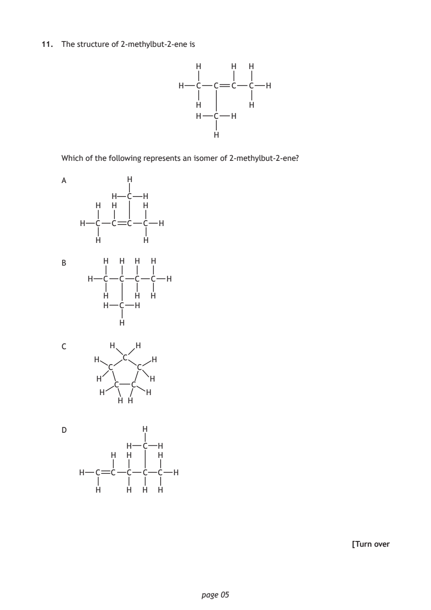
Selectable page text
11. The structure of 2-methylbut-2-ene is
H H H
H C C C C H
H H
H C H
H
Which of the following represents an isomer of 2-methylbut-2-ene?
A H
H C H
H H H
H C C C C H
H H
B H H H H
H C C C C H
H H H
H C H
H
C H H
H C H
C C
H H
C C
H H
H H
D H
H C H
H H H
H C C C C C H
H H H H
[Turn over
page 05PDF page 6
Paper 1, Question 12Paper 1, Question 13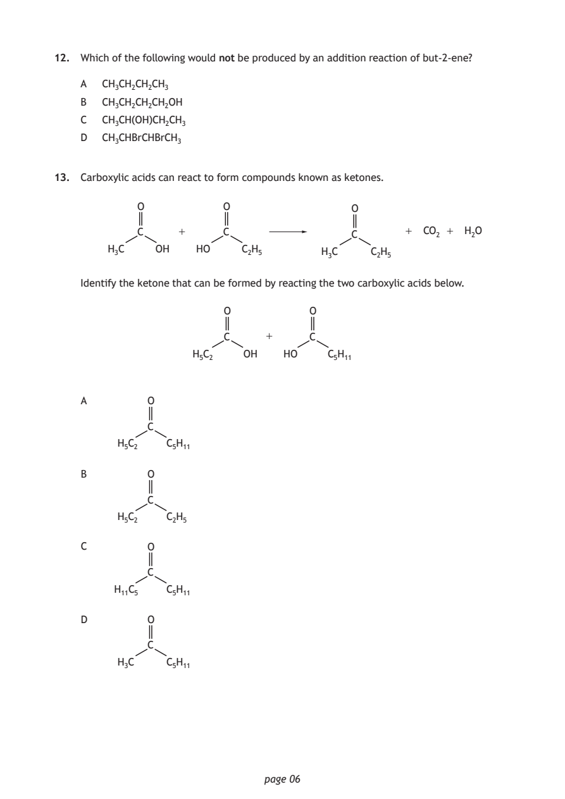
Selectable page text
12. Which of the following would not be produced by an addition reaction of but-2-ene?
A CH₃CH₂CH₂CH₃
B CH₃CH₂CH₂CH₂OH
C CH₃CH(OH)CH₂CH₃
D CH₃CHBrCHBrCH₃
13. Carboxylic acids can react to form compounds known as ketones.
O O O
C + C C + CO₂ + H₂O
H₃C OH HO C₂H₅ H₃C C₂H₅
Identify the ketone that can be formed by reacting the two carboxylic acids below.
O O
C + C
H₅C₂ OH HO C₅H₁₁
A O
C
H₅C₂ C₅H₁₁
B O
C
H₅C₂ C₂H₅
C O
C
H₁₁C₅ C₅H₁₁
D O
C
H₃C C₅H₁₁
page 06PDF page 7
Paper 1, Question 14Paper 1, Question 15Paper 1, Question 16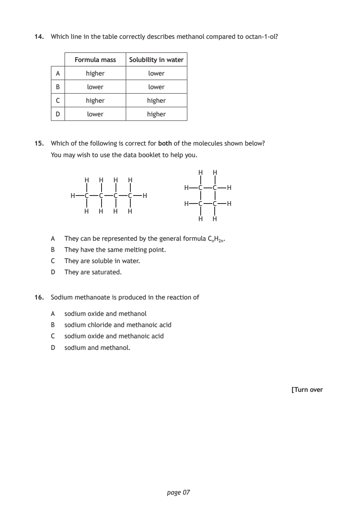
Selectable page text
14. Which line in the table correctly describes methanol compared to octan-1-ol?
Formula mass Solubility in water
A higher lower
B lower lower
C higher higher
D lower higher
15. Which of the following is correct for both of the molecules shown below?
You may wish to use the data booklet to help you.
H H
H H H H
H C C H
H C C C C H
H C C H
H H H H
H H
A They can be represented by the general formula CₙH₂ₙ.
B They have the same melting point.
C They are soluble in water.
D They are saturated.
16. Sodium methanoate is produced in the reaction of
A sodium oxide and methanol
B sodium chloride and methanoic acid
C sodium oxide and methanoic acid
D sodium and methanol.
[Turn over
page 07PDF page 8
Paper 1, Question 17Paper 1, Question 18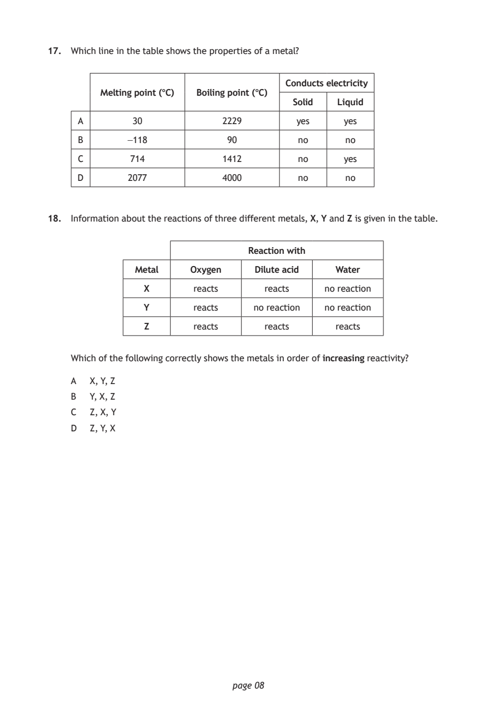
Selectable page text
17. Which line in the table shows the properties of a metal?
Conducts electricity
Melting point (°C) Boiling point (°C)
Solid Liquid
A 30 2229 yes yes
B -118 90 no no
C 714 1412 no yes
D 2077 4000 no no
18. Information about the reactions of three different metals, X, Y and Z is given in the table.
Reaction with
Metal Oxygen Dilute acid Water
X reacts reacts no reaction
Y reacts no reaction no reaction
Z reacts reacts reacts
Which of the following correctly shows the metals in order of increasing reactivity?
A X, Y, Z
B Y, X, Z
C Z, X, Y
D Z, Y, X
page 08PDF page 9
Paper 1, Question 19Paper 1, Question 20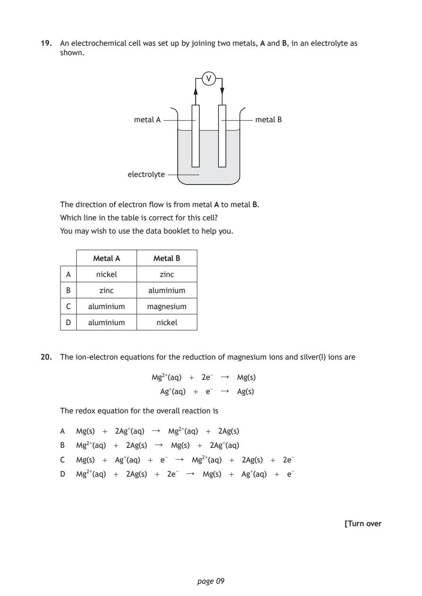
Selectable page text
19. An electrochemical cell was set up by joining two metals, A and B, in an electrolyte as
shown.
V
metal A metal B
electrolyte
The direction of electron flow is from metal A to metal B.
Which line in the table is correct for this cell?
You may wish to use the data booklet to help you.
Metal A Metal B
A nickel zinc
B zinc aluminium
C aluminium magnesium
D aluminium nickel
20. The ion-electron equations for the reduction of magnesium ions and silver(I) ions are
Mg²⁺(aq) + 2e⁻ ↓ Mg(s)
Ag⁺(aq) + e⁻ ↓ Ag(s)
The redox equation for the overall reaction is
A Mg(s) + 2Ag⁺(aq) ↓ Mg²⁺(aq) + 2Ag(s)
B Mg²⁺(aq) + 2Ag(s) ↓ Mg(s) + 2Ag⁺(aq)
C Mg(s) + Ag⁺(aq) + e⁻ ↓ Mg²⁺(aq) + 2Ag(s) + 2e⁻
D Mg²⁺(aq) + 2Ag(s) + 2e⁻ ↓ Mg(s) + Ag⁺(aq) + e⁻
[Turn over
page 09PDF page 10
Paper 1, Question 21Paper 1, Question 22Paper 1, Question 23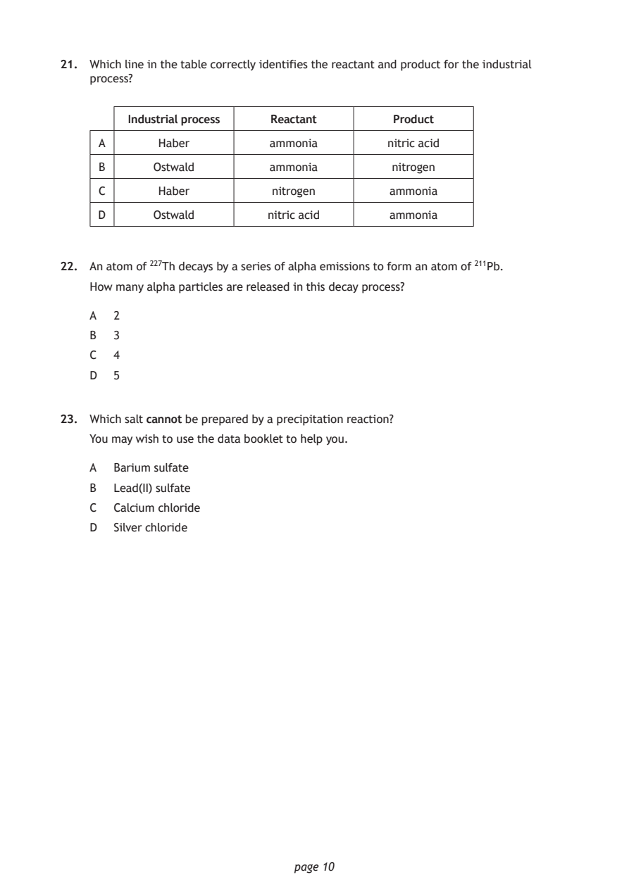
Selectable page text
21. Which line in the table correctly identifies the reactant and product for the industrial
process?
Industrial process Reactant Product
A Haber ammonia nitric acid
B Ostwald ammonia nitrogen
C Haber nitrogen ammonia
D Ostwald nitric acid ammonia
22. An atom of ²²⁷Th decays by a series of alpha emissions to form an atom of ²¹¹Pb.
How many alpha particles are released in this decay process?
A 2
B 3
C 4
D 5
23. Which salt cannot be prepared by a precipitation reaction?
You may wish to use the data booklet to help you.
A Barium sulfate
B Lead(II) sulfate
C Calcium chloride
D Silver chloride
page 10PDF page 11
Paper 1, Question 24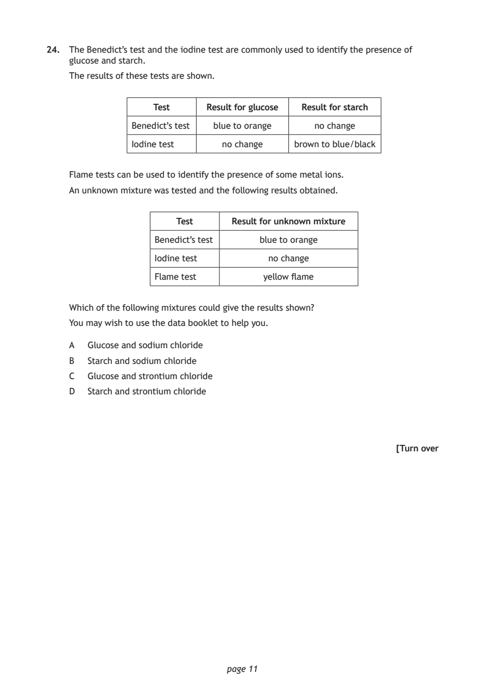
Selectable page text
24. The Benedict’s test and the iodine test are commonly used to identify the presence of
glucose and starch.
The results of these tests are shown.
Test Result for glucose Result for starch
Benedict’s test blue to orange no change
Iodine test no change brown to blue/black
Flame tests can be used to identify the presence of some metal ions.
An unknown mixture was tested and the following results obtained.
Test Result for unknown mixture
Benedict’s test blue to orange
Iodine test no change
Flame test yellow flame
Which of the following mixtures could give the results shown?
You may wish to use the data booklet to help you.
A Glucose and sodium chloride
B Starch and sodium chloride
C Glucose and strontium chloride
D Starch and strontium chloride
[Turn over
page 11PDF page 12
Paper 1, Question 25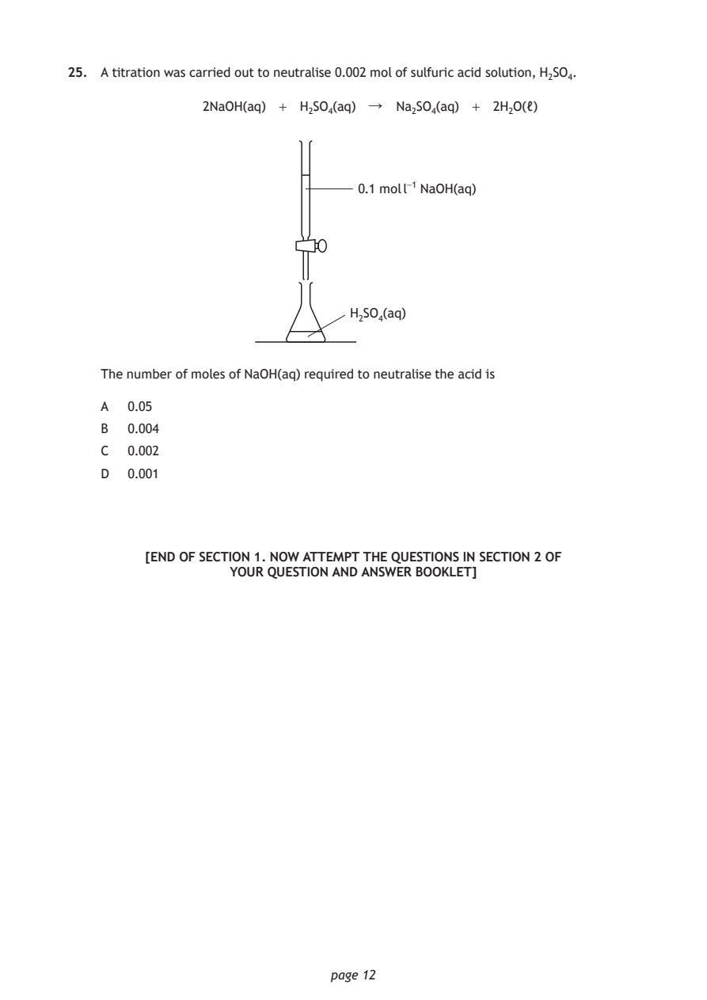
Selectable page text
25. A titration was carried out to neutralise 0.002 mol of sulfuric acid solution, H₂SO₄.
2NaOH(aq) + H₂SO₄(aq) ↓ Na₂SO₄(aq) + 2H₂O(ℓ)
0.1 mol l⁻¹ NaOH(aq)
H₂SO₄(aq)
The number of moles of NaOH(aq) required to neutralise the acid is
A 0.05
B 0.004
C 0.002
D 0.001
[END OF SECTION 1. NOW ATTEMPT THE QUESTIONS IN SECTION 2 OF
YOUR QUESTION AND ANSWER BOOKLET]
page 12